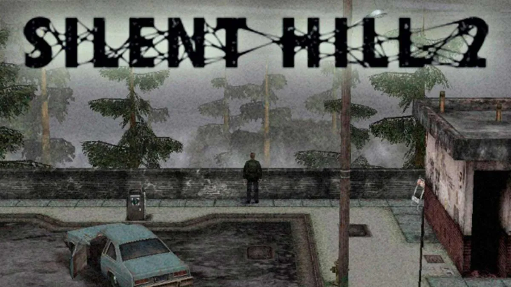

Welcome, to silent hill
- - - - - - - -
D. The Letter
- - - - - - - -
Mary:
In my restless dreams,
I see that town.
Silent Hill.
You promised you'd take me
there again someday.
But you never did.
Well I'm alone there now...
In our 'special place'
Waiting for you...
Waiting for you to
come to see me.
But you never do.
And so I wait, wrapped in my
cocoon of pain and loneliness.
I know I've done a terrible
thing to you. Something you'll
never forgive me for.
I wish I could change
that, but I can't.
I feel so pathetic and ugly
laying here, waiting for you...
Every day I stare up at the cracks
in the ceiling and all I can think
about is how unfair it all is...
The doctor came today.
He told me I could go
home for a short stay.
It's not that I'm getting better.
It's just that this may be
my last chance...
I think you know what I mean...
Even so, I'm glad to be coming
home. I've missed you terribly.
But I'm afraid James.
I'm afraid you don't really
want me to come home.
Whenever you come see me,
I can tell how hard it is on you...
I don't know if you
hate me or pity me...
Or maybe I just disgust you....
I'm sorry about that.
When I first learned that
I was going to die, I just
didn't want to accept it.
I was so angry all the time and I
struck out at everyone I loved most.
Especially you, James.
That's why I understand
if you do hate me.
But I want you to
know this, James.
I'll always love you.
Even though our life together had
to end like this, I still wouldn't
trade it for the world. We had
some wonderful years together.
Well this letter has gone on
too long so I'll say goodbye.
I told the nurse to give
this to you after I'm gone.
That means that as you read this,
I'm already dead.
I can't tell you to remember me,
but I can't bear for you to
forget me.
These last few years since I
became ill...I'm so sorry for
what I did to you, did to us...
You've given me so much and
I haven't bee able to return
a single thing.
That's why I want you to live
for yourself now.
Do what's best for you, James.
James...
You made me happy.
